A service account name typed with surrounding spaces: 1280 and 400 px
Disposable pictures from a running isolated Paseo 0.15.3 (own home, port 7493, fake op and security, mock agent). Today = main e4acaec as it is; proposed = the same plus ../evidence/candidate-disposable.diff. The name typed in every "spaced" picture is " sa-a " (one space before and after). Proposed-design pictures: proposed-*.png. No screen words change; what changes is that the Test row and the agent agree with the connection line.
Today: typed " sa-a ", then Save token: the line says Connected
Today: after Save, reopened and Test pressed: Connected, yet "No token stored for this service account." (a new agent gets STRIPE_KEY blank)
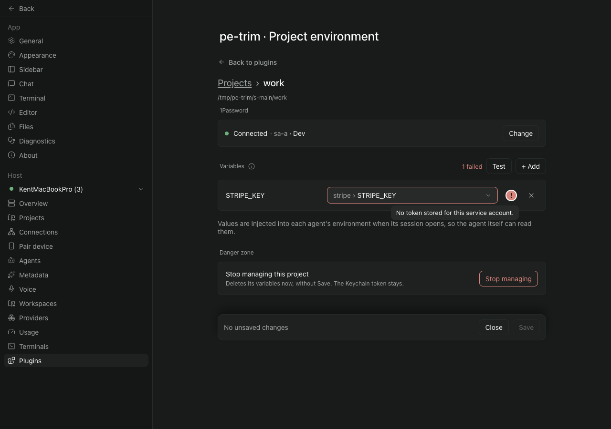
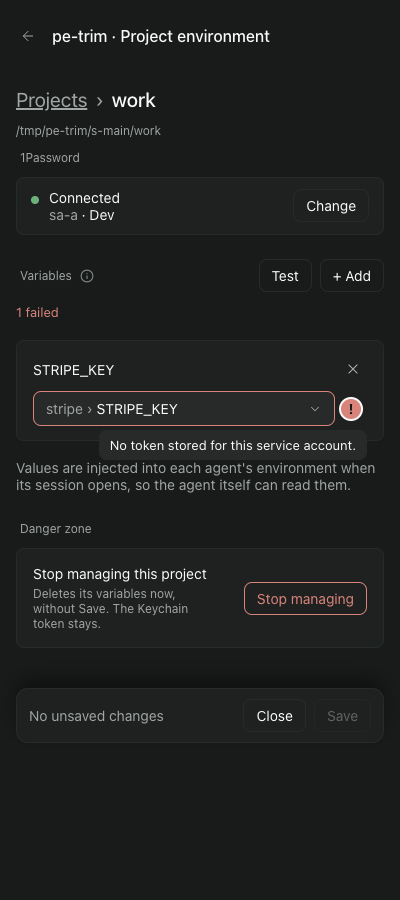
Proposed: the same steps: the line says Connected
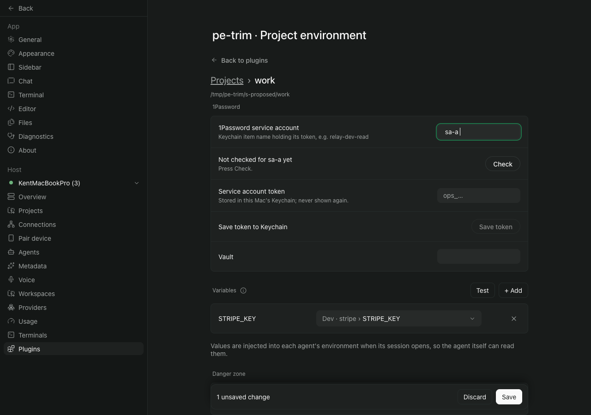
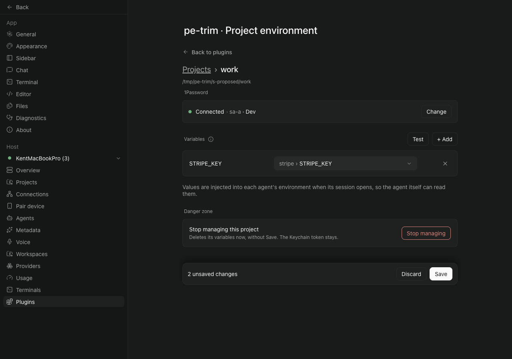
Proposed: after Save, reopened and Test pressed: "All 1 set" (a new agent gets STRIPE_KEY filled)
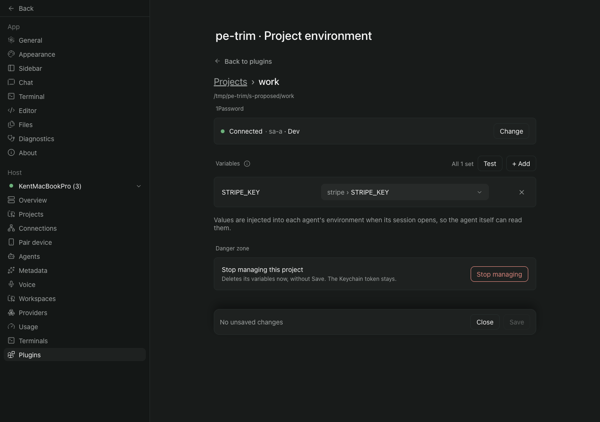
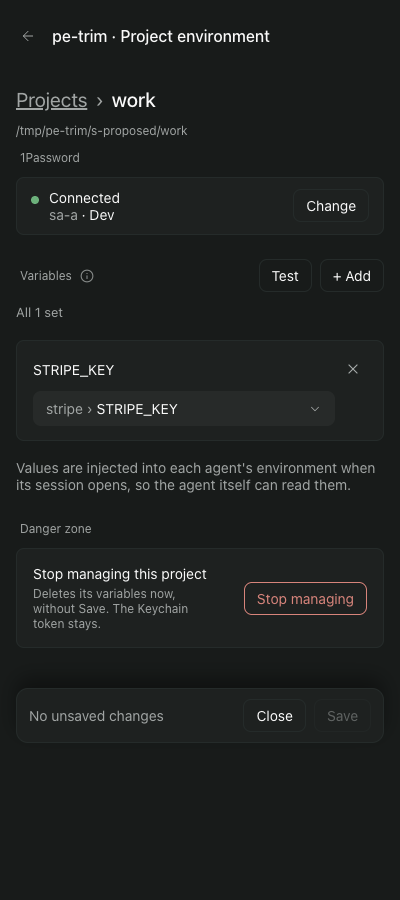
Project list after Save: today keeps the spaces in the hint, proposed saves "sa-a"

A project saved before the fix with " sa-a ", opened without retyping: today Test fails; proposed Test passes and the saved name is left as it was
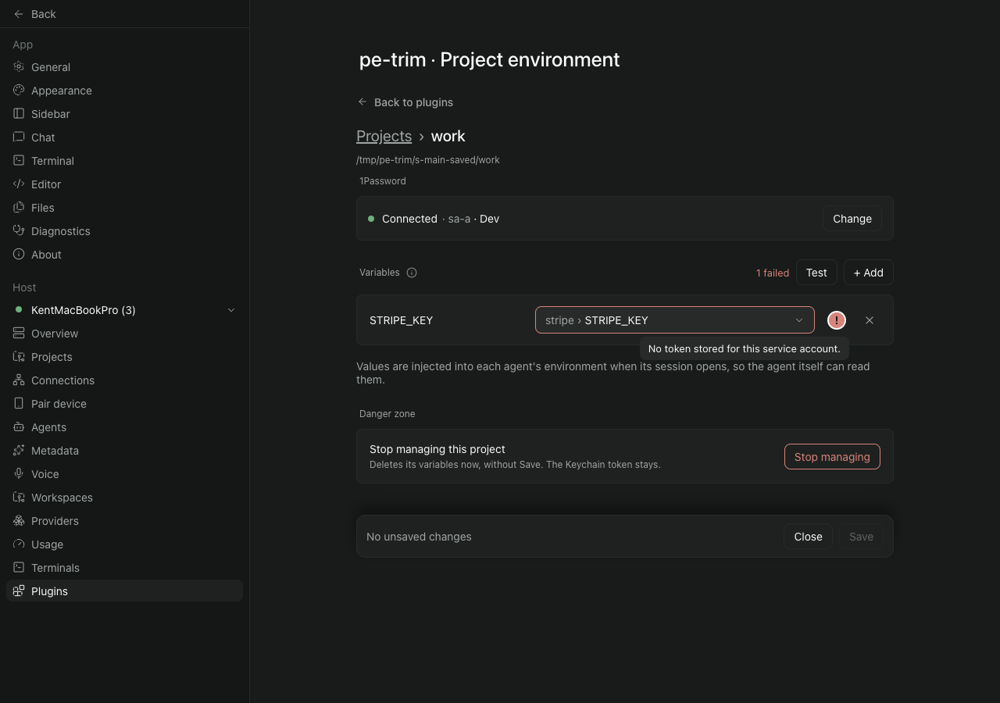
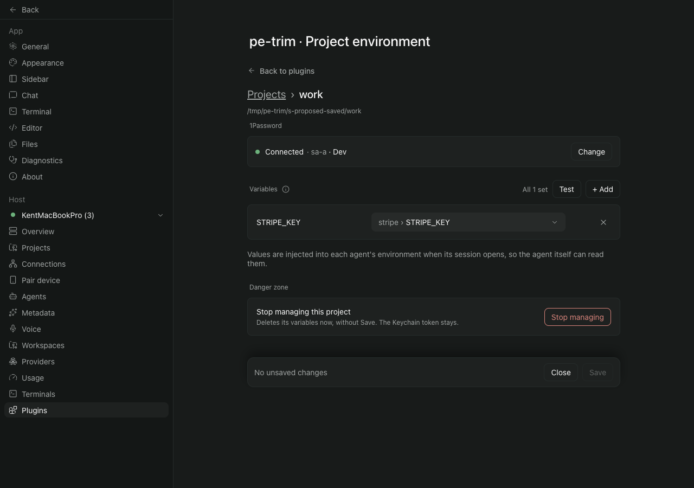
Proposed: a name of only spaces behaves like an empty name: "No service account named yet", Check and Save token off
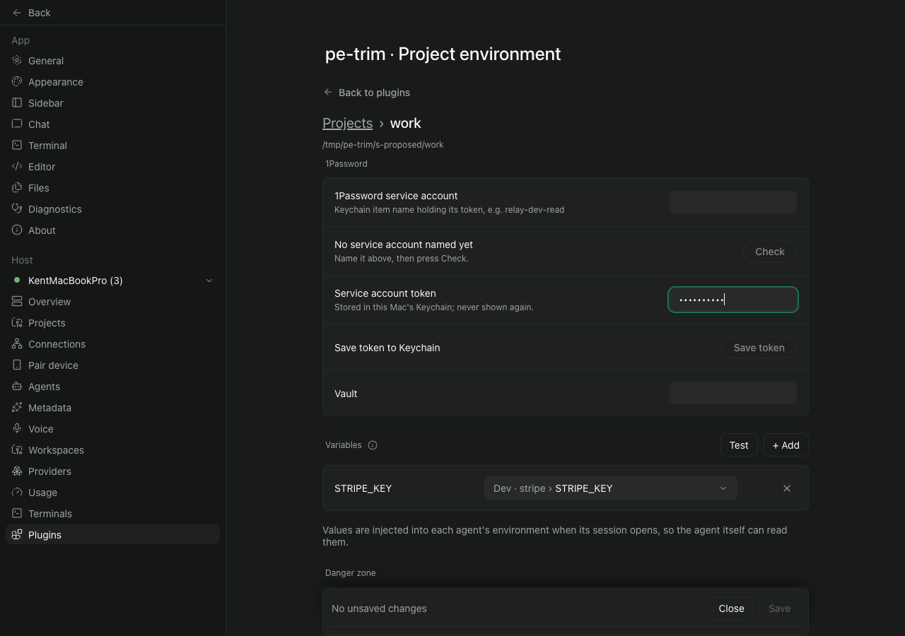
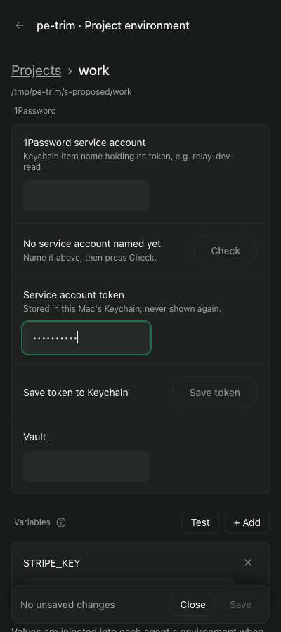
Proposed: the project list for a project saved before the fix with " sa-a ": the hint shows the saved value, which is not rewritten
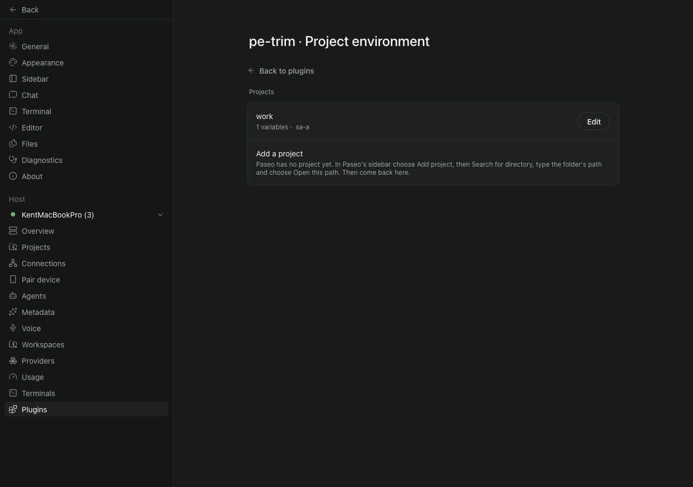
Unchanged case, name typed without spaces: today and proposed are the same